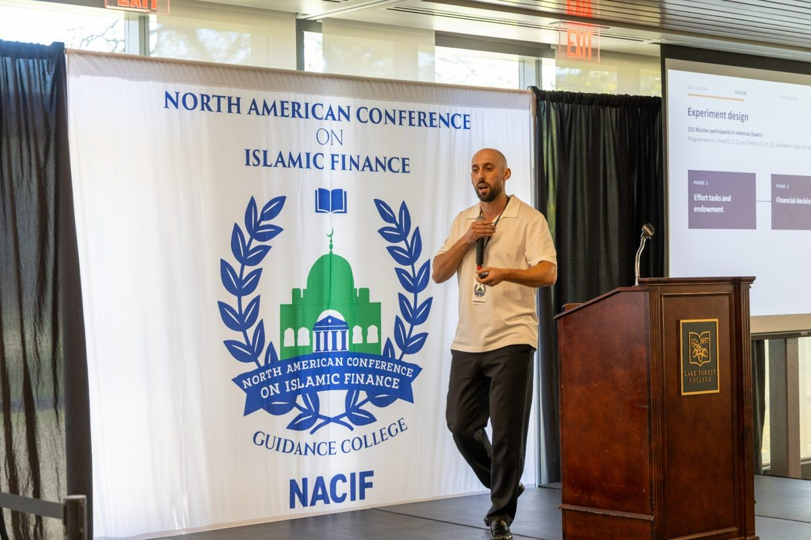

About Me
I am a PhD candidate in Industrial Economics at the Universitat de València, funded by a competitive national FPU fellowship from the Spanish Ministry of Universities. My research investigates the institutional, religious, and cognitive barriers that prevent vulnerable households from fully benefiting from the financial system, with a particular focus on how these frictions shape financial decisions. I use applied econometrics, field experiments, cross-country microdata, and survey-based evidence to study financial inclusion and household financial behaviour. My work bridges development economics, household finance, and experimental finance, with a special interest in the role of religion and financial literacy influence economic decisions.
Research fields: Household Finance, Experimental Finance, Development Economics, Islamic Finance.
Research
Job Market Paper
-
Religion and Financial Behavior: Evidence from Muslims' Financial Decisions
Abstract
What do believers do when a financial return conflicts with a religious prohibition? We study this question in a lab-in-the-field experiment with 151 Muslims in Spain, who decide whether to place money they have earned in an unlabeled interest-bearing asset. Half of them do. Offering permitted alternatives, either charitable giving or interest-free lending within the community, does not detectably reduce this investment. Participants use these options, but they finance them mainly with money they would otherwise have kept. Behavior instead follows knowledge, and different kinds of knowledge point to different behaviors. Understanding compound interest is associated with investing, whereas knowledge of Islamic finance is associated with cooperation and risk aversion. Contrary to the view that Muslims are closed to conventional finance, the link between financial knowledge and investment appears to survive a religious constraint.
Working Papers
-
Overconfidence Effect and Financial Satisfaction: Ignorance is Bliss?
Abstract
Subjective financial satisfaction is widely used to assess financial well-being and inclusion policies. But, it rests on self-assessment. We ask whether overconfidence in financial knowledge, the gap between how much people think they know and how much they actually know, is associated with higher financial satisfaction without any improvement in objective financial outcomes, and which groups are most exposed. Using the 2016 and 2021 waves of the Spanish Survey of Financial Competences, we measure overconfidence as the part of self-assessed knowledge not explained by objective test performance. First, we use Generalized Additive Models (GAMs) to identify the functional form of this relationship and then estimate ordered logit models. Our results reveal a linear association, with no evidence of threshold effects or diminishing returns. A one-standard-deviation increase in overconfidence is associated with a 3.9 and 4.8 percentage-point increase in the probability of reporting financial satisfaction in 2016 and 2021, respectively. This association is stronger among individuals with lower financial literacy, lower incomes, and less education. However, overconfidence is not associated with income shortfalls or debt arrears. These findings suggest that overconfidence can improve how people perceive their financial well-being without improving their actual financial circumstances. Financial education policies should therefore aim not only to increase financial knowledge but also to improve its calibration.
-
COVID-19 Restrictions and Digital Finance: A Case Study of Digital Payments
Abstract
This research examines the effects of COVID-19 restrictions on digital payment usage across 103 economies using multilevel modeling. Our findings show that COVID-19 measures have had a significant and positive association with the growth of digital payments in low- and lower middle-income economies. We also identify significant disparities in how these measures affect financially vulnerable groups (females, individuals in the lowest income quintile, and those with only primary education or less) compared to others. In high-income economies, international travel restrictions help close the digital payment usage gap between the most and least advantaged groups. However, in low- and lower middle-income economies, COVID-19 restrictions have increased this gap. The findings have implications for public strategies to foster greater financial inclusion through digital payment systems.
-
Mapping the Economic Influence of China and the United States in Africa: A TOPSIS Composite Index
Abstract
We map the intensity and direction of Chinese and U.S. economic engagement across 54 African economies over 2012–2023, combining five channels: trade, FDI, aid (ODA), other official flows (OOF) and infrastructure contracts. We classify countries as contested, Chinese-leaning, U.S.-leaning or peripheral. The continental balance shifts steadily towards China, though unevenly, and dual engagement persists. Our main results highlights that the two powers compete through different instruments: China’s position rests on trade and contracts, the United States’ on aid. China–U.S. rivalry in Africa is thus a contest of composition, not merely of volume.
Publications
- UNESCO Global Geoparks as drivers of territorial development: Case studies in Spain
- Advanced digital skills of the Spanish population from 2015 to 2021: Socioeconomic and geographical factors according to an ordered probit model
- Information society, digital human capital and the gender gap in Spain: A regional analysis
Presentations

-
2026:
– 4th North American Conference on Islamic Finance (NACIF), Lake Forest College, USA– Wolpertinger Conference 2026 “Finance for a Better Society: Inclusion, Financial Literacy, Digitalisation and the Green Transition”, Università Roma Tre, Italy
-
2025:
– Research seminar, Bangor University, UK– XXV Reunión de Economía Mundial (REM), Universidad Rey Juan Carlos, Spain (runner-up, José Luis Sampedro Prize)– V Workshop de Joves Investigadors del Departament d’Anàlisi Econòmica, Universitat de València, Spain
-
2024:
– 3rd Vietnam Symposium in Entrepreneurship, Finance, and Innovation (VSEFI), Hanoi, Vietnam– Workshop on Financial Exclusion and Innovation in Times of Banking Digitalisation, IIDL. Universitat Jaume I, Vila-real, Spain– IV Workshop de Joves Investigadors del Departament d’Anàlisi Econòmica, Universitat de València, Spain
-
2022:
– X Jornadas de Geografía Económica, Asociación Española de Geografía (AGE), Universitat Autònoma de Barcelona, Spain
-
2021:
– XXXIV International Conference ASEPELT, Universidad de Jaén, Spain
Teaching
- Introduction to Economics, B.A. in Business Administration (2023–2025) and Tourism (2026–2027), Universitat de València. Student evaluations: 4.34/5 and 4.47/5.
- Teaching innovation projects on short videos (coordinator, 2025–2026) and new technologies in learning (member, 2026–2027).